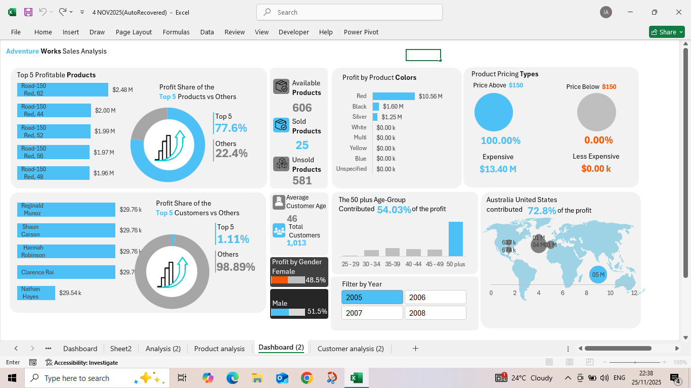
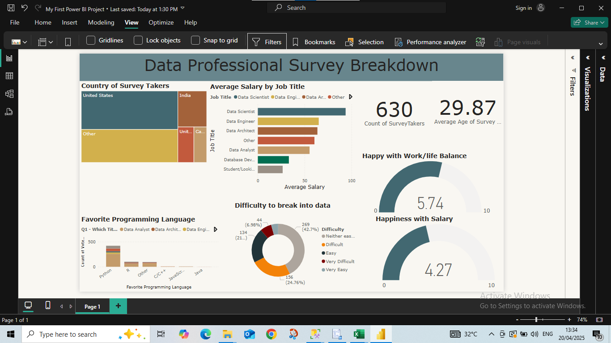
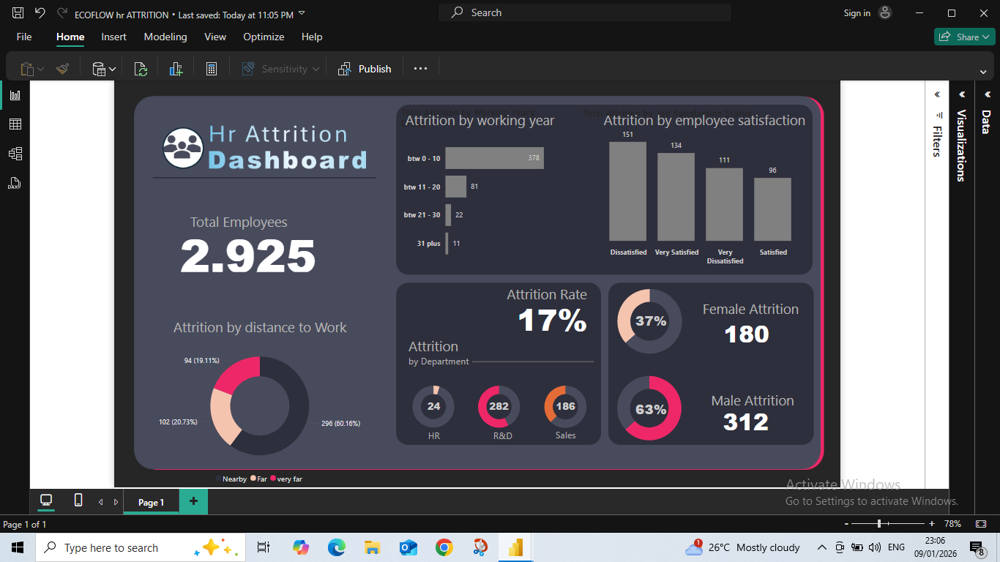
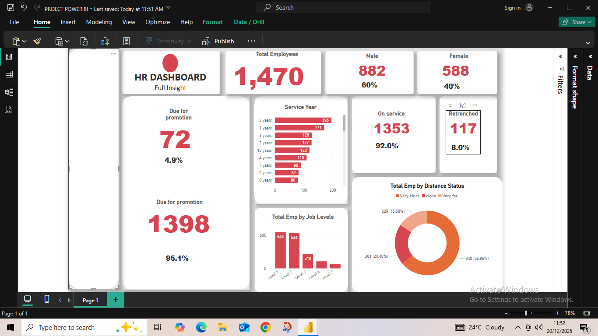

Hi, I’m Churchill. I build dashboards and analytics projects that help teams stop guessing, spot what matters faster, and act on data with confidence. Explore my work across Excel, Power BI, SQL, and Tableau.
Here’s a snapshot of the kind of work I do: turning raw data into a dashboard that surfaces trends, highlights performance, and makes decision-making easier.

Built to make sales performance easier to understand at a glance, this dashboard brings key metrics into one place so trends, top products, and customer contribution are instantly visible.
Whether the goal is reporting, dashboarding, or analysis, each section below shows how I approach data through different tools.
Dashboard builds, KPI tracking, and reporting designed to make spreadsheet data more useful and easier to act on.
View Excel ProjectsInteractive dashboards built to help decision-makers explore trends, compare performance, and uncover insights faster.

View Power BI ProjectsQuerying, cleaning, and analysis work that turns raw tables into answers stakeholders can actually use.
View SQL ProjectsVisual analytics and interactive dashboards designed to make complex information easier to explore and understand.
View Tableau ProjectsA closer look at some of my Power BI dashboard work, from workforce reporting to survey-based insight generation.
A dashboard exploring salary patterns, preferred tools, job roles, and industry trends across data professionals.
View Project
A workforce analytics dashboard focused on employee attrition, turnover patterns, and HR decision support.
View Project
A clean reporting dashboard built to show workforce structure, employee distribution, and HR performance metrics.
View ProjectHi, I’m Churchill, a data analyst who enjoys turning messy data into clear, decision-ready insights.
I build dashboards and analyses that don’t just look good, but actually help people understand what’s going on, why it matters, and what to do next. Whether it’s cleaning raw data, exploring trends, or designing intuitive dashboards, my focus is always on making information simple, useful, and easy to act on.
I combine analytical thinking, clean design, and business context to create work that goes beyond surface-level reporting. Instead of overwhelming you with numbers, I help you see the story behind the data and use it to make smarter decisions with confidence.
I care about clarity, structure, and usability. That means building dashboards people actually use, reports that answer real questions, and solutions that bring real value, not just visuals.
At the end of the day, my goal is simple: turn your data into something you can understand, trust, and use to move forward.